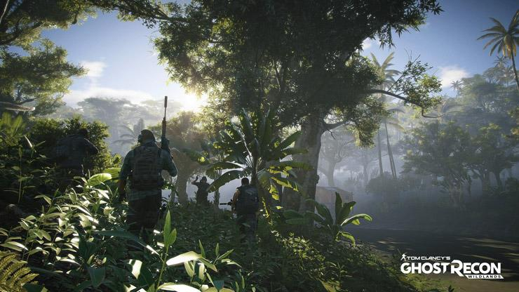
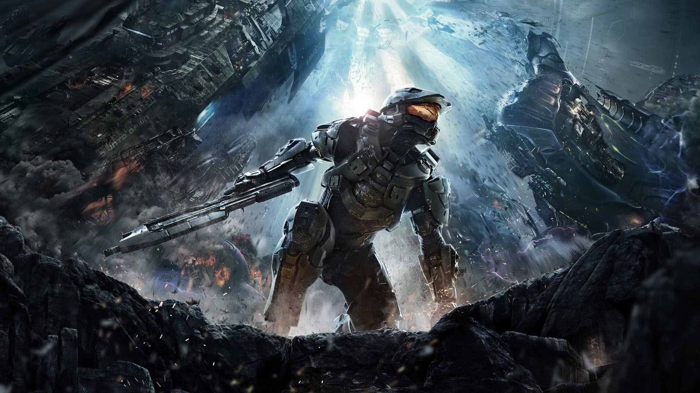
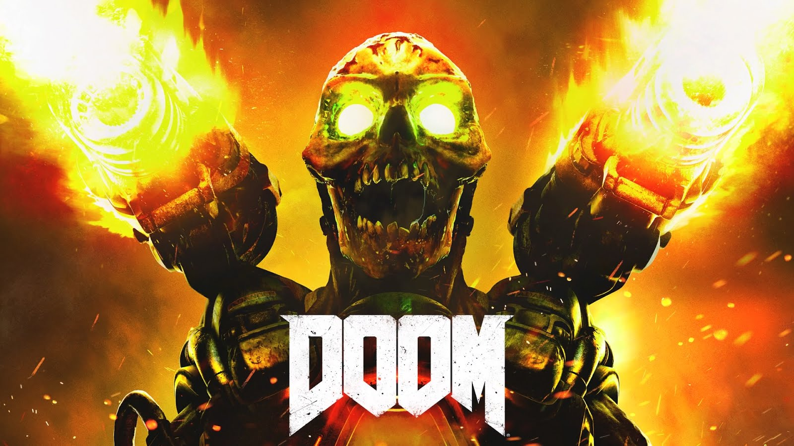
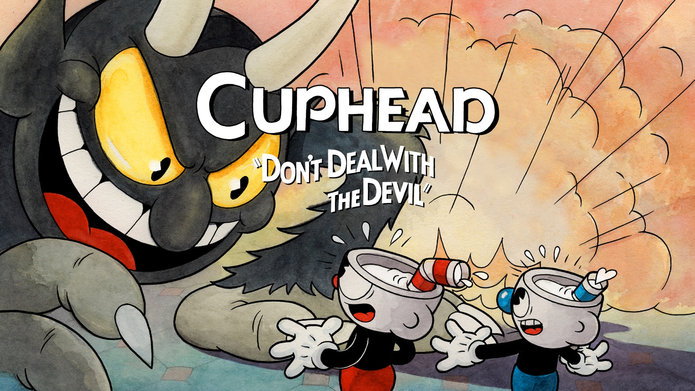
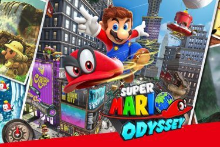

Algunos juegos recomendados de este género
Ghost Recon: Wildlands

Ghost Recon: Wildlands La historia de Ghost Recon Wildlands gira en torno al siempre apasionante mundo del narcotráfico,
presentándonos a una de las organizaciones narcoterroristas más peligrosas de su mundo ficticio: el cártel de Santa Blanca.
Con El Sueño a la cabeza, un megalómano narco que dirige con mano firme y desde las sombras el complejo entramado del cártel,
en los últimos años El cartel de Santa Blanca ha ido adquiriendo cada vez más poder en Bolivia gracias a una conjunción de varios factores,
de entre los que destacan la fuerte demanda de cocaína por parte deSudamérica, Estados Unidos y Canadá , una impecable organización
criminal en la que distintos "capos" menores controlan la producción, distribución, contrabando y seguridad de su imperio, una gran
infraestructura y un nutrido ejército compuesto, por un lado de traficantes de poca monta y, por el otro, por la Unidad, un cuerpo
policial corrupto y bien preparado dispuesto a cualquier cosa con tal de cumplir los delirios de grandeza de El Sueño, cuya mayor
ambición va más allá de la riqueza económica y anhela convertirse en el principal dirigente de Bolivia.
Esta inestable situación política en el país sudamericano, que incluso ha forzado a su presidente a firmar un acuerdo de impunidad con el cártel a cambio de que no se produzcan más muertes de inocentes, estaba siendo seguida muy de cerca por la
DEA norteamericana, que llevaba mucho tiempo observando en las sombras sin actuar. Pero todo eso cambia de repente cuando un
agente infiltrado de la agencia antidroga estadounidense es descubierto y brutalmente asesinado por miembros de Santa Blanca.
s en ese momento cuando el gobierno norteamericano decide intervenir y, con el fin de evitar un conflicto internacional, pone
en marcha la Operación Matarreyes, que es encomendada a sus 4 mejores agentes especiales, o Ghosts, y que tiene unos objetivos muy claros:
infiltrarse en el corazón de Bolivia, ponerse en contacto con los Rebeldes, la única resistencia local contra Santa Blanca, y colaborar
junto a ellos para, uno a uno, acabar con la vida de los miembros principales del cártel hasta llegar al objetivo final: eliminar a El Sueño.
Así, los primeros compases del juego nos ubican en una reunión clandestina entre los Ghosts y el líder de los Rebeldes, quien nos informa
de los escasos recursos con los que cuentan y, además, nos deja muy claro que no se fía un pelo de nosotros. Es hora de ganarnos su
confianza.
Halo 4

Esta edición de la franquicia altamente popular Halo fue desarrollada por 343 Industries, que tomó el control después de que Bungie Studios, creadores de los cuatro primeros juegos, se separó de Microsoft. A su favor, 343 Industries mantuvo el Halo con la acción intensa del tirador en primera persona al que los fanáticos están acostumbrados, pero aumentó la interacción emocional entre el icónico Master Chief y su compañera de inteligencia artificial, Cortana.
La acción comienza con el Jefe Maestro en estado de sueño criónico y Cortana comenzando a experimentar un estado rampante, una condición para los seres con inteligencia artificial en la que se consideran muertos. En algún punto, Cortana lo compara con tener 1.000 discusiones con ella misma, pero intenta desesperadamente aferrarse a su cordura para ayudar a Chief, su aliado humano.
La conexión entre estos dos personajes hace que esta versión sea realmente especial. Desde la escena de apertura con Catherine Halsey, la creadora del programa de supersoldados de la historia, hasta su clímax, la tensión entre humanos y máquinas se maneja en toda la historia.
Cortana parece más emotiva que antes, una adición grata al personaje. Master Chief mantiene su personalidad de soldado individualista y nada absurdo durante la mayoría del juego, pero hay momentos en que desearás que se quite su casco para que puedas ver las expresiones faciales que sientes debe estar haciendo.
Halo 4 me enganchó emocionalmente antes de que me percatara. Algunas escenas me hicieron sentir oleadas de euforia o desesperación antes de reconocer que estaba reaccionando al juego, verdaderamente una señal de una experiencia inmersiva.
Los gráficos de Halo 4 son excepcionales en sus representaciones detalladas de personajes y ambientes de fondo. Ya sea un follaje para un entorno selvático o el movimiento individualizado de pequeños pedazos de destrucción, cada escena es tratada con mucha atención hasta el más mínimo elemento.
Los personajes se ven como actores de acción en vivo, y sus movimientos y emociones tienen una realidad, casi como de cine. Esta técnica ha sido utilizada en otros juegos, pero Halo 4 eleva el estándar para que otros lo emulen.
La actuación de la voz y los diálogos son fantásticos y ayudan a involucrarte en la historia. Rápidamente odiarás a algunos personajes basándote solo en la inflexión de su voz.
El juego introduce a un nuevo personaje de la serie reciente serie para web Halo, y a veces me preguntaba si estaba perdiéndome en las bromas relacionadas con los libros Halo. Pero conocer el universo entero de Halo no es un prerrequisito para disfrutar este juego.
Hay ocho misiones en el modo de un solo jugador, con suficientes armas y vehículos de donde escoger. El combate en el juego parece más estratégico que el estilo sencillo e impetuoso que hemos visto en títulos previos. Por ejemplo, utilizar el accesorio de salto de la armadura que permite a los jugadores saltar a lugares ocultos y acabar con los enemigos. Y otras capacidades de la armadura permiten que el Master Chief cree una torre flotante, que me pareció grandiosa para disipar un campo de batalla antes de entrar.
No se preocupen fanáticos, las grandes secuencias de acción aún están allí. Las secuencias épicas de pelea de Halo 4 no requieren que los jugadores confronten oleadas de enemigos en una misión, y luego acaben con los chicos malos uno por uno. Y por supuesto, la acción cooperativa y multijugador en línea está disponible si quieres incluir a un amigo o probar tu suerte contra un oponente.
A pesar de todo el caos, lo que destacó para mí en Halo 4 fue la historia. Los nuevos desarrolladores hicieron un esfuerzo para profundizar en los personajes que hemos conocido durante años y transformarlos en algo nuevo.
La cuestión “hombre o máquina” se vuelve más fuerte a medida que el juego progresa, y me encontré viendo diferentes misiones y escenas a través de ese lente. ¿Cortana es más humana a medida que su mente comienza a dividirse? ¿John-117, el soldado que conocemos como Master Chief, se convirtió en una máquina robótica asesina?
¿O ambos influyeron tanto en el otro que las diferencias que esperamos ver entre uno y otro se mezclaron, creando una relación simbiótica que sólo se vuelve evidente cuando un lado decepciona al otro?
Durante una escena tensa, Master Chief dice a Cortana, “se suponía que debía protegerte”. Ella contesta, “se supone que debíamos protegernos el uno al otro”.
Las acciones profundas entre estos dos personajes principales mejoran la narrativa y hacen de Halo 4 una maravillosa adición nueva a una amada franquicia; y la mejor campaña de Halo hasta ahora.
Doom 4 (doom 2016)

Comenzando por su campaña, encontramos una poco inspirada en la narrativa, dejando que la balanza se incline totalmente hacia el lado de la jugabilidad. Doom presenta un estilo frenético de juego en el que hay que ir encadenando muertes por el escenario y quedarte quieto o acorralado sin duda será sinónimo de muerte (no hacerlo tampoco asegura al cien por cien la supervivencia. Este estilo tan rápido y fluido de combate además trae algo de la vieja escuela a un género donde todos quieren ser Call of Duty, Battlefield o como mucho Far Cry.
Doom arriesga en su planteamiento, mostrándose fiel a sus raíces y dando el toque justo de modernidad a su fórmula. Es por ello que hay que aplaudir el mérito por traernos una experiencia según fue planeada y que no se ha dejado influir por lo que podría asegurarles más ventas. Doom no es un shooter para todos, requiere de cierta habilidad en el manejo de las mecánicas del género, que aquí son llevadas a su máxima expresión. Doom es un juego que separa el grano de la paja, que divide a los hombres de los niños, y no hablamos solamente por su violencia desmedida.
Y es que el juego acaba siendo un espectáculo gore con varios litros de sangre en pantalla por minuto. La jugabilidad de Doom, según sus propias normas en las que se eliminan coberturas, apuntado y recarga de las armas, está muy enfocada a las ejecuciones de los enemigos. Cuando hemos causado un daño concreto a un enemigo nos aparecerá un indicador visual que avisa de que el enemigo puede ser ejecutado con una de las variadas glory kills. Estas ejecuciones no son simplemente un deleite visual para ver lo bien trabajadas que están las animaciones, sino que acaba siendo la clave de la supervivencia... y eso puede llegar a agotar al usuario.
Teniendo en cuenta la evidente falta de ítems de curación, munición y objetos de escudo repartidos por el escenario, hay que terminar jugando con estas ejecuciones, ya que al acabar así con los enemigos, estos sueltan objetos de vida. Es por ello que en los numerosos tiroteos será común el dejar enemigos inferiores vivos para ejecutarlos cuando mejor nos convenga. Este patrón tiene que acabar repitiéndose una y otra vez y a las pocas horas de juego, lo que al comienzo eran animaciones distintas para cada tipo de enemigo e incluso variantes según por dónde se ejecute al enemigo, acaban por ser una pesadez que deja de divertir pero que hay que seguir haciendo hasta la saciedad.
Por suerte para los novatos en la saga, este reboot de Doom para 2016 no presenta un problema para estrenarse con esta entrega. Aquellos novatos serán rápidamente introducidos en una historia simple en la que veremos las consecuencias de usar la energía del infierno en el planeta Marte. Al final se irá estirando el chicle con un objetivo que desde un comienzo es matar a una enemiga principal causante del mal sufrido. Pese a que la narrativa queda en un claro segundo plano, serán varias las escenas que intentarán ubicar al jugador y contarle la historia, pero estas escenas además de pesadas e innecesarias cometen el pecado de dar un frenazo (de mano) al excelente ritmo que imprime el propio juego cuando está activo.
A pesar de que los combates son lo mejor del modo campaña, no sucede así con las situaciones que nos sirven como excusa para ello. Más de un 80 por ciento de las arenas están provocadas por la activación de un nido demoníaco que necesitamos para continuar. Casi el 20 por ciento restante son simples escenarios en los que veremos a la IA de una estancia decir que no nos dejará continuar hasta eliminar la amenaza demoníaca, bloqueando una puerta o apareciendo los típicos sellos de oleada que impiden avanzar.
En cuanto a la duración, resulta satisfactoria teniendo en cuenta la media por la que se mueve el sector FPS. Completar nuestra primera pasada en un nivel de dificultad intermedio y sin obsesionarse por los secretos, simplemente recogiendo los que nos pillan de camino llevará unas 11 horas. Eso sí, Doom es un juego con un volumen elevadísimo de secretos por descubrir en cada rincón de sus escenarios. Desde muñecos que desbloquean skins alternativas hasta niveles de los Doom originales. Además, a pesar de que el juego no te obliga a la exploración, resulta conveniente hacerlo en los momentos de respiro, pues aporta una serie de puntos canjeables por mejoras de armadura Praetor y las propias armas. A pesar de que generalmente aparecen en el mapa, alcanzar estos secretos de nivel no será tarea fácil, pues el diseño de niveles es genial y pone a prueba nuestras capacidades de escalada y llegar a zonas que aparentemente quedaban fuera de nuestro alcance.
Además, para volver la jugabilidad algo más dinámica todavía (teniendo en cuenta que nunca vamos a tener un tiroteo igual a otro), se han añadido una serie de variantes en cada nivel. La primera de ella son los desafíos. Se nos impone una serie de condicionantes en cada nivel que tendremos que conseguir con los enemigos que aporta cada uno de los niveles. También habrá repartidas por el mapa una serie de pruebas rúnicas, que nos llevan a escenarios preconfigurados en los que completar alguna prueba contrarreloj (y a su vez nos va dando ideas para crear en Snapmap). De conseguir ser completadas con éxito, se nos otorga una runa, que podemos equipar en una de las tres ranuras que llegaremos a tener disponibles y actúan como habilidades pasivas.
Dota 2

Dota 2 es un juego multijugador de estrategia en tiempo real, distribuido por la plataforma Steam de Valve. En este, dos equipos de cinco jugadores tienen el objetivo de destruir las estructuras rivales controlando a personajes denominados héroes. Ellos no pueden controlar las estructuras ni a las unidades que aparecen cada cierto tiempo.
Siempre se juega en un mismo mapa que tiene dos lados: Radiant y Dire, cada uno de ellos presenta ventajas y desventajas respecto a la visión, unidades neutrales y posicionamiento. Hay tres líneas donde chocan unidades no controladas: arriba, abajo y medio.
Variedad. Se puede elegir entre 113 héroes, lo que permite bastante flexibilidad al estilo de juego y estrategia. Por ello se considera que Dota 2 tiene una curva de aprendizaje bastante alta, debido a todas las mecánicas presentes en los personajes y en el mapa.
Cada héroe tiene ciertas habilidades y estadísticas (fuerza, agilidad e inteligencia) que modifican su ataque, vida y mana. Cada cierto tiempo, parches buscan balancear el juego para evitar abusos de ciertas estrategias.
El origen. Dota 2 tiene sus raíces en StarCraft, específicamente Aeon of Strife (AoS), un mapa personalizado generado por los usuarios. Años después con el lanzamiento de Wacraft 3, se creó el inmensamente popular Defense of the Ancientes (DotA). Uno de sus desarrolladores, ‘IceFrog’, creó Dota 2, su compañero ‘Guinsoo’ partió a otro camino y logró el éxito de League of Legends.
Juego competitivo. DotA All Stars logró posicionarse en torneos. Un logro fue llegar al BlizzCon de 2005 y los World Cyber Games. Su popularidad en países nórdicos, Europa del Este y Asia ha creado un circuito competitivo donde hay jugadores y anunciadores que se dedican a tiempo completo al juego, especialmente con la llegada de Dota 2.
La escena competitiva de Dota 2 tiene una gran cantidad de seguidores. La final de The International 2016 alcanzó una audiencia de 3 millones de personas alrededor del mundo.
Cifras millonarias. Cada año el pozo de The International, el equivalente al mundial de clubes de Dota 2, crece cada año. Inició en 2011 con US$ 2.5 millones y en 2017 ya pasó los US$ 23 millones. Esto significa que el equipo ganador se repartirá más de US$ 10 millones.
Hasta el momento los torneos de Dota 2 han repartido US$ 101 millones. El estadounidense Saahil ‘Universe’ Arora (27) de Evil Geniuses es el jugador que ha ganado más en premios. En sus más de seis años de carrera acumula US$ 2.8 millones.
Cuphead

Cuphead, un juego que tardó cerca de tres años en desarrollarse y que llamó la atención por su particular estética por fin llegó a Xbox One y PC, y vaya que tiene sorprendido a todos los jugadores con su nivel de dificultad, pues éste se oculta tras inocentes dibujos.
El título tiene como protagonistas a dos hermanos –Cuphead y Mugman– quienes salen de su apacible pueblo (a pesar de las advertencias) para conocer más del mundo. En sus aventuras, llegan a un casino lleno de particulares personajes en donde se encuentran al mismísimo Diablo con quien hacen una apuesta y evidentemente, pierden, por tanto sus almas ahora le pertenecen al Señor de las Tinieblas. Ellos rogando, consiguen un acuerdo en donde deben reunir todos los espíritus que deben ir al infierno para salvar las suyas.
Es así que inicia una campaña por tres mundos y varios niveles en donde debes derrotar a enemigos de todas clases. Una de las primeras cosas que llama la atención de este juego es su animación y apariencia que emula a las caricaturas de los años 30, pero no sólo eso, sino que se usó las técnicas de estos años para desarrollar todo el proyecto. Uno pensaría que con la tecnología que existe ahora, este tipo de arte ya era obsoleto pero StudioMDHR lo retomó para hacer su primer título.
Todos los personajes que ves en pantalla son únicos, pintados a mano y su animación y movimientos fueron creados a partir de la técnica flipbook –en donde se coloca página por página hasta lograr la articulación correcta. Esto es un trabajo de producción muy cansado y exhaustivo, lo que hace que apreciemos aún más esta joya independiente. Aunado a esto, es necesario recalcar que en cada nivel hay muchos personajes y objetos moviéndose al mismo tiempo en un balance perfecto, lo cual evidencia que el tiempo de desarrollo no fue en vano.
No te dejes engañar por su estética un tanto infantil, Cuphead es uno de los títulos más difíciles que he jugado. Desde el primer nivel es todo un desafío y cada vez va aumentando. Aunque los retos son breves cuenta con ciertos elementos que hacen que en más de una vez pierdas, como por ejemplo los pequeños enemigos –que son muchos, vienen por oleadas y pondrán a prueba tus habilidades de coordinación– que te estorban al intentar lograr tu objetivo y que los antagonistas no tienen medidor de vida alguno, por lo que no estás seguro de si ya estás a punto de acabarlo o todavía te falta gastar unas cuantas municiones más –esto sólo lo sabes cuando mueres y aparece una gráfica de cuán cerca estuviste de lograrlo. La combinación de todos estos elementos hacen que en más de una ocasión avientes el control y grites, pero que a los segundos te serenes y vuelvas a intentarlo.
Otro elemento que destaca el gran esfuerzo que hizo el equipo creativo es que cada nivel es único. En ningún momento te encontrarás un jefe similar y sus ataques no son nada parecidos, además cada uno tiene su propio soundtrack –que está conformado por piezas de estilo jazz, que encaja perfectamente con la época que está emulando– lo cual hace que cada uno sea una experiencia totalmente diferente.
Los niveles tienen dos modos: simple y regular, en caso de que no puedas pasar el segundo es buena idea intentar con el primero para estar familiarizado con los movimientos de tu enemigo, pero en ese no te otorgarán las almas que estás recolectando para el Diablo.
A pesar de tener un gameplay tradicional, Cuphead incluye algunos sistemas que nos recuerdan que estamos jugando un título contemporáneo. Por ejemplo, tenemos la tienda dentro del juego gracias a la cual puedes comprar tipos de disparos y encantamientos, también existen los supers que te darán cierta ventaja sobre tus enemigos.
Los comandos son sumamente sencillos, es obvio que el estudio también quiso hacer uso de la simplicidad de los botones y el joystick para transportarnos a otra era. Jugar en cooperativo es en gran apoyo, sobre todo si no puedes pasar un nivel, pero es probable que más de uno se confunda de personaje o se pierda entre tanto material que hay en la pantalla –sólo es cuestión de coordinar y prestar atención.
A pesar de que amé este juego y hubo una ocasión en la que casi no dormí por estar intentando pasar algunos niveles, me hubiera gustado que se añadieran ciertos elementos, sobre todo la posibilidad de conseguir vidas extras cuando haces el doble salto sobre un item rosa. Además, en ciertas ocasiones se cayó el framrate haciendo que los colores chillones y surrealistas repentinamente se decantaran y se convirtieran en blanco y negro por unos segundos.
Mario Odyssey

La nueva aventura del ahora ex-fontanero italiano para la Nintendo Switch no solo es una evolución sin vuelta atrás a la fórmula clásica de Mario, sino que una muestra de la madurez que ha ganado Nintendo a la hora de crear sus experiencias de juego.
Super Mario Odyssey es un juego que ocupa literalmente cada una de las herramientas dispuestas por la serie durante todos los años que ha existido y las mezcla de una manera coherente, divertida, adictiva y, como pocas veces ha pasado en la historia del juego, con sentido.
Uno podría decir que a simple vista, Super Mario Odyssey es nuevamente un juego en donde hay que rescatar a la princesa de las garras de Bowser. Pero no. Super Mario Odyssey es en realidad una aventura, un viaje a través de diferentes mundos que no representan solo un cambio en el fondo y en la música, sino que tienen una razón de estar dentro de la historia.
El plan de Bowser en esa oportunidad es casarse con la princesa Peach, por lo que debe organizar la mejor boda de la historia, y para ello, viaja por el mundo recolectando todos los ingredientes: desde el vestido que usa Peach hasta la torta y la cena que se le servirá a los invitados. Es tras esa cacería que Mario y su nuevo compañero Cappy deben ir visitando diferentes reinos para ir solucionando los problemas que va causando Bowser. Es una narrativa simple, pero existe y es algo de lo que nunca se habían preocupado realmente más allá de los RPG del fontanero: de que Mario en su travesía puede ser el héroe de muchas más personas que de solo la Princesa.
En la historia principal deberemos viajar a través de 14 reinos, cada uno con una temática, estética y jugabilidad muy diferentes. Cada reino puede variar en tamaño y complejidad, pero todos operan con la lógica de un mundo abierto hecho para explorar. Al ser mapas reducidos, la exploración se hace mucho más sencilla y con mayor densidad de cosas por hacer, a diferencia de la propuesta de mundo abierto de Zelda, donde es un gran mapa que contiene toda la experiencia.
Esto hace que si bien Odyssey es más corto que Zelda, la cantidad de cosas que puedes hacer es mucho mayor en el juego del bigotón.
Estos mapas están hechos para hacernos buscar lunas, que son los equivalentes a las estrellas que hemos visto en el resto de la serie. Las lunas son las que le dan poder a la nave Odyssey y las que permiten que avancemos de nivel. Y el juego está literalmente lleno de lunas. Para que se hagan una idea: Super Mario 64 tenía 120 estrellas en total a lo largo de todo el juego.
Pero acá, solo en el reino de la arena hay 69 escondidas por todos lados. Para algunas tendrás que derrotar un jefe, para otras, tendrás que terminar un nivel muy corto, para otras, simplemente escalar a lo más alto de un rascacielos, romper una caja, plantar una semilla, conducir un auto, escapar de un dinosaurio o recolectar monedas. En esencia, cada uno de los mundos de Super Mario Odyssey es como el castillo de Peach de Mario 64, y es desde allí donde vamos encontrando el camino para hacer los desafíos. Es un Open World pero en su justa medida, sin el exceso que implica liberar torres y buscar items que solo llenan nuestra pantalla de números inútiles.
Esta aproximación al mundo abierto es tremendamente inteligente y es la que hace que, a ratos, se sienta como que cada era de Super Mario está reflejada en el diseño. Hay misiones lineales como las de Mario Galaxy, secciones en 2D como los Mario clásicos, y mucha exploración para recordarnos a Mario 64 y Sunshine. Pero todo sin que uno se de cuenta de las transiciones. Hay misiones tontas, otras difíciles, pero todas hechas para satisfacer al jugador de manera instantánea.
Lo interesante de las capturas es que cada reino posee solo un par de enemigos capturables, los que definen la jugabilidad de cada reino. Las balas, por ejemplo, están presentes en el reino del desierto, pero no en el de la cascada, donde puedes poseer Chomps, o en el reino de la playa, donde puedes capturar pulpos y pescados. Así, cada mundo está diseñado para poder sacarle provecho a cada una de estas capturas, ya sea para pasar niveles o resolver puzzles.
Volver al inicio .